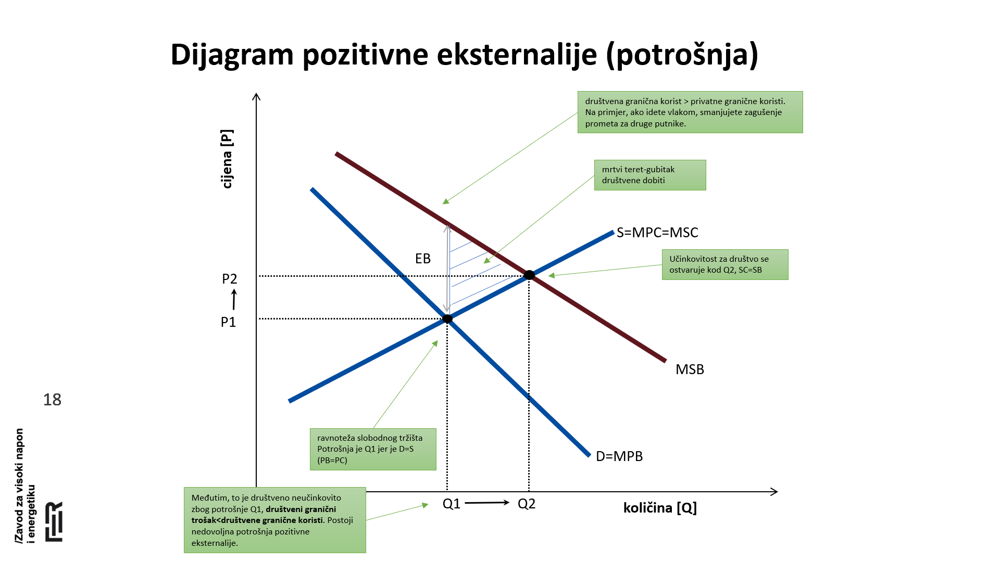
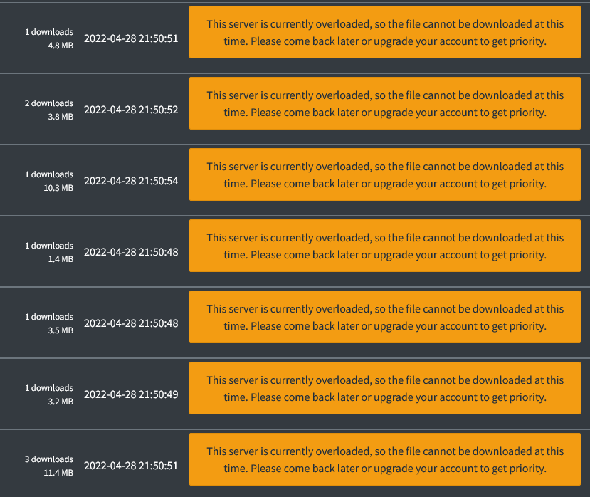
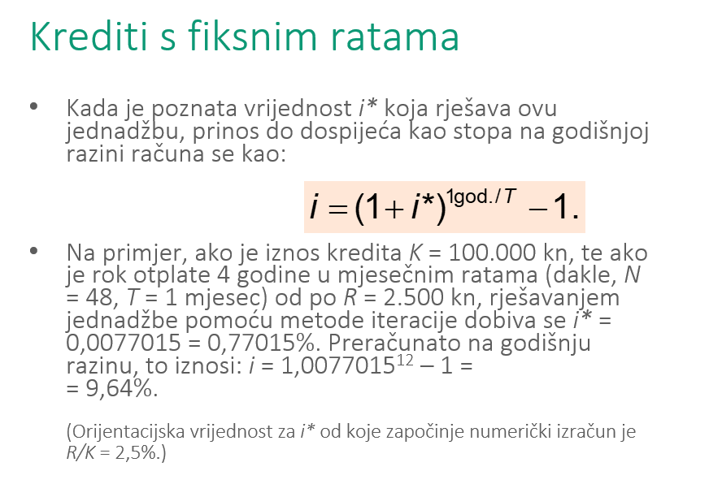
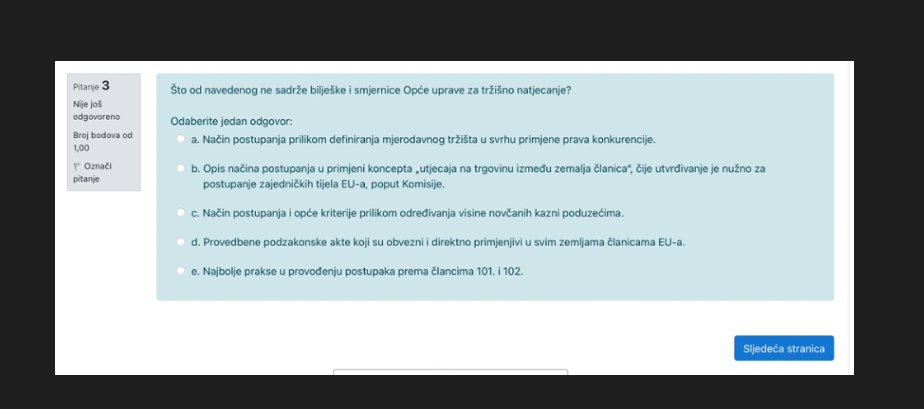

Postoje neki stari ispiti ili primjeri pitanja?
Jel ovo treba uciti iz onih prvih nabrojenih prezentacija na moodleu ili onih koji su pobrojani ispod svakog tjedna predavanja?
mgd Mislim da se koriste one prve nabrojane, pišu datumi predavanja na početku svake.
Jel imaju negdje preze objavljene vidim samo link na corecon?
brr na moodle su ti sve prezentacije
 zna netko tko je bio na predavanjima objasniti jedan od ovih grafova, vidim da ih ima bas puno i cijela 3. prezentacija se vrti oko toga, bilo kakva pomoć će dobro doći
Iz nekog razloga ja ne vidim prezentacije u moodleu pa ima li mozda to neko skinuto da mi posalje? Edit: pise mi nesto u smislu da ne mogu sam upisati predmet i nemam pristup nikakvim materijalima.
vrabac https://gofile.io/d/PTegfh Ova “skripta” od 300 stranica je dodatan materijal, kazu da su preze dovoljne
anon00  hmmmmm
viliml https://we.tl/t-mJ817qMb5n
Probaj ovo. U velikom PDFu fale 3. i 7. (jedna prezentacija je dva puta stavljena, mislim da je druga) One su posebno. Treće predavanje je ovo iz okoliša.
koje formule trebamo znat?
Može netko u kratkim crtama objasnit kako se računa šugavi i* u, recimo, ovom primjeru: 
yeahaight Pa kao što kaže na slajdu, metoda iteracije. Onu prvo jednadžbu preokreneš u i^*=\frac{R}{K}\cdot\frac{(1+i^*)^N-1}{(1+i^*)^N} pa iteriraš i^*_0=\frac{R}{K} \\ i^*_{k+1}=\frac{R}{K}\cdot\frac{(1+i^*_k)^N-1}{(1+i^*_k)^N}
 zna netko ovo, nmg nac na slajdovima?